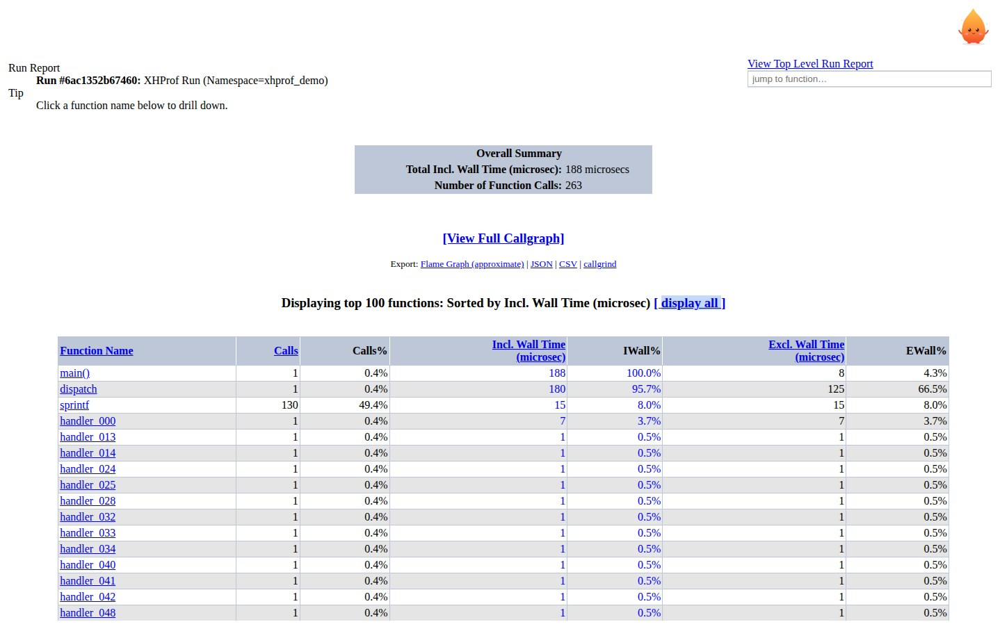
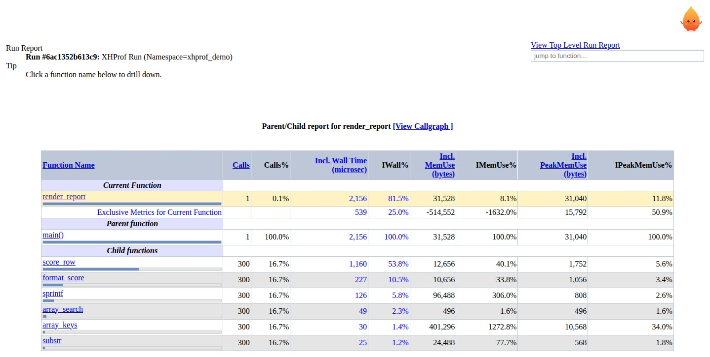
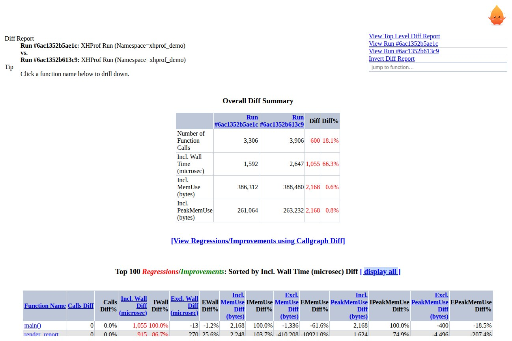
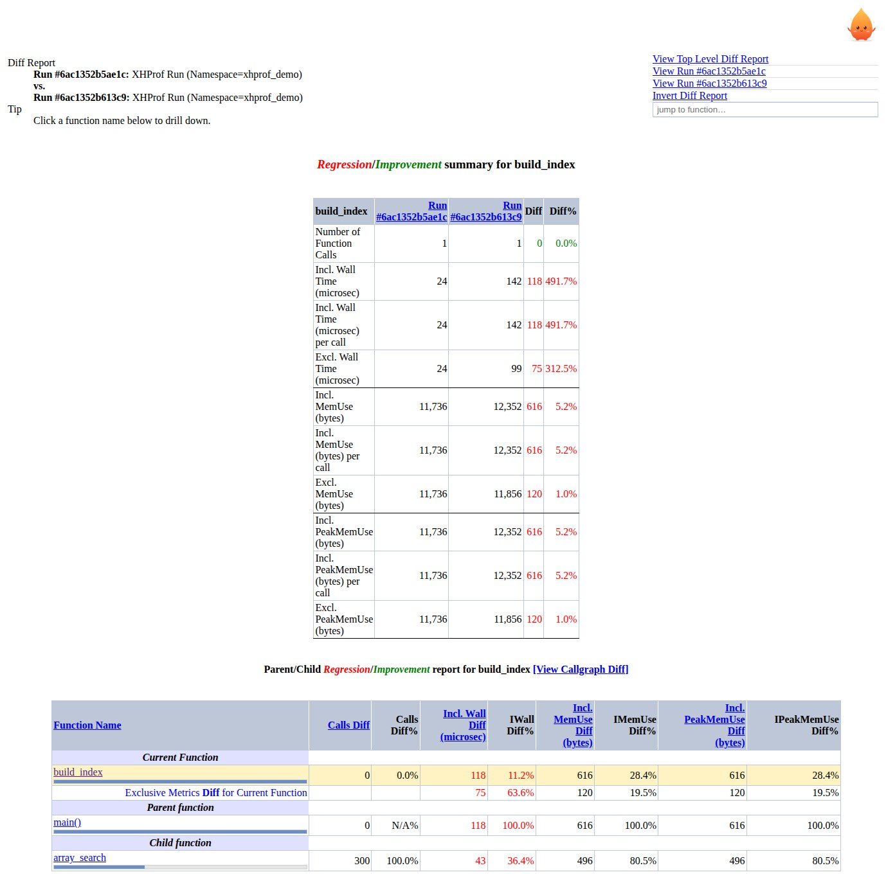
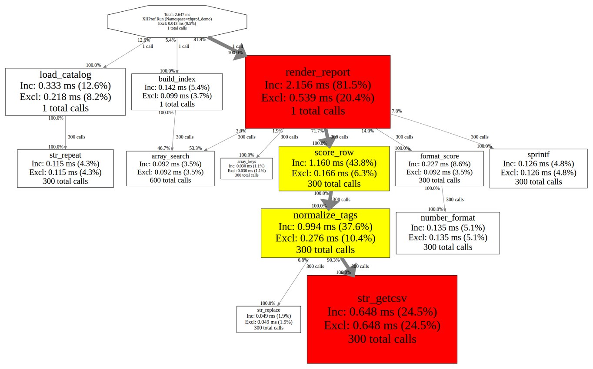
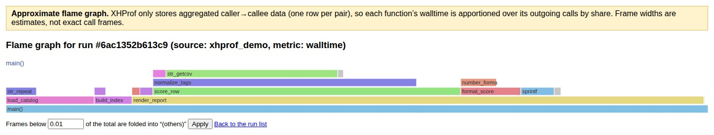

Français (translation, may lag behind this page)
XHProf is a hierarchical profiler for PHP: the xhprof extension
(see extension/) records call counts and inclusive wall time, CPU
time and memory numbers per function while your code runs, and the PHP pages
in xhprof_html/ report on the runs that were saved.
This guide describes the reports in xhprof_html/. Installing the
extension, the xhprof.* INI settings and how to collect runs are
covered in the README.
Contents
Runs are stored by the default XHProfRuns_Default implementation
as files named <run_id>.<source>.xhprof in the directory
given by the xhprof.output_dir INI setting (the
XHPROF_OUTPUT_DIR environment variable also works). Everything the
UI shows comes from that directory, so point your web server at
xhprof_html/, make sure the PHP user can read the run directory,
and open index.php.
Terminology. Inclusive (subtree) time of a function includes the
time of the functions it calls; exclusive (self) time is the time spent in
the function itself. wt is wall time in microseconds, mu is the
change in PHP memory usage in bytes and pmu the change in peak memory.
main() is the fictitious root of the call graph, and recursive
calls appear as foo@1, foo@2, …
Opening index.php without parameters lists the saved runs, newest first (the timestamp next to each entry is the run file’s modification time). The file name holds both identifiers you need: the run id and the source (namespace) it was saved under.
index.php?run=<run_id>&source=<source>.Compare selected uses the run higher in the list (the newer run) as run1 and the other as run2 — the tick order does not matter. The source (namespace) used for the diff is the source of that same first-in-list run, so compare runs saved under the same namespace; ticking a different number of boxes than two pops up “Check exactly two runs to compare them.”
The button is a shortcut for the URL
index.php?run1=<id1>&run2=<id2>&source=<source>,
so a diff can be linked to directly — both forms open the same report.
The flat report summarizes one run. The header names the run
(Run #<run_id>: XHProf Run (Namespace=<source>)) and the
Overall Summary table gives the run totals per metric plus the number of
function calls.

Columns. One row per function, with
Sorting. Click a column header to sort by it: numeric columns sort descending, Function Name sorts ascending (case-insensitively). The header of the current sort column is highlighted in bold.
Top 100. Only the top 100 rows are shown by default
(“Displaying top 100 functions: Sorted by …”); the
[ display all ] link next to the title — and at the bottom of the
table — switches to every function (&all=1).
Clicking a function name opens its parent/child report. Above the table, [View Full Callgraph] opens the callgraph and the Export line links the flame graph and the JSON / CSV / callgrind exports.
Clicking a function in any flat report (or picking it in the typeahead box) drills into that function: the report is scoped to it — the title reads Parent/Child report for <function> — and shows, in one table:
Each parent and child row carries a small bar whose width is the row’s share of the function’s inclusive metric (of the first metric shown, normally wall time), so the heaviest callers and callees stand out at a glance. Hovering the metric cells of a parent or child row shows the fraction behind its percentage — for a child row of the example below: “score_row when called from render_report takes 1,160 of walltime, which is 53.8% of the inclusive walltime for render_report (2,156)”; a parent row gets the mirror wording (“… is due to calls from main()”).

main() with six callees; the bars show each callee’s share of the
function’s inclusive wall time.The [View Callgraph] link next to the title opens the callgraph focused on this function (its direct parents and children only). The current function’s name is also a link to the same page, so the URL can be copied from the address bar and pasted into a mail or ticket.
To compare two runs — to find what regressed between two builds, or to check what a change bought you — open the diff report. There are two entry points, both described in the run list:
index.php?run1=<baseline>&run2=<candidate>&source=<source>.Run1 is the baseline, run2 the run being compared against it; every number in
the report is run2 − run1. The action list offers
View Run #… links for both sides and Invert Diff Report, which
swaps run1 and run2.
An Overall Diff Summary table at the top shows the totals of both runs, their absolute difference and the difference as a percentage of run1. In the tables below, red marks a regression — a positive difference, so the function costs more in run2 — and green an improvement.

Clicking a function opens the Regression/Improvement summary for it: calls, inclusive wall time, inclusive wall time per call, and exclusive wall time (and the same for every other collected metric), each with the values in both runs, the delta and the delta percentage; below it, the parent/child diff shows which callers and callees the change is coming from.

build_index went from 24 µs to
142 µs (+491.7%) across array_search.For a visual take, a diff report links [View Regressions/Improvements using Callgraph Diff] to a callgraph of the change.
A run parameter can name several runs of the same source, comma-separated:
index.php?run=<id1>,<id2>,<id3>&source=<source>.
The UI aggregates them into one report (flat and parent/child views work exactly
as for a single run) and the header shows
“Aggregated Report for N runs: … ” so the numbers are not mistaken for a single
profile. Because call counts are averaged over the runs, they can be
fractional; invalid run ids in the list are skipped, and the header names them
(skipped invalid runs: …).
Weighted aggregation. Add wts= with one weight per run to
give each run its share of the mix — for example three page types that occur in
a 20 / 30 / 50 mix:
index.php?run=1,2,3&wts=20,30,50&source=benchmark[View Full Callgraph] (on any flat report) and [View Callgraph] (on a parent/child report) render the run as a directed graph: a box per function, an arrow per caller → callee edge, with inclusive / exclusive time and call counts inside each box. The critical path is highlighted. The focused callgraph (from a parent/child report) shows only the function’s direct parents and children, which keeps a big run readable.

The picture is generated by Graphviz’s dot, which must be
installed and on PATH (the Docker image in the README includes
it). Useful parameters for callgraph.php:
| Parameter | Meaning |
|---|---|
run, source | the run to draw |
run1, run2 | draw a diff callgraph instead of a single run |
func | focus on one function (direct parents/children only) |
threshold | only functions whose exclusive time is at least this fraction of the run total are drawn (default 0.01, i.e. 1%) |
type | image format: svg (default), png, jpg, gif, ps |
critical | 1 (default) highlights the critical path, 0 turns the highlight off |
Open it from the Flame Graph (approximate) link on a run’s report, or directly:
flamegraph.php?run=<run_id>&source=<source>
main() at the bottom,
callees stacked above their callers. Hover a frame for its width and self time,
click one to zoom into it, and use the breadcrumb (or [reset]) to zoom
back out.Widths and metrics. The width of a frame is its share of the metric
shown in the title. By default that is wall time (wt); pass
metric= to use another one (for example mu). If the run
carries no such metric — a wall-time-only run has no cpu, for
instance — the page falls back to the first metric the run actually has, and the
title shows which metric is in use.
Threshold. Frames narrower than a fraction of the run (0.01 of the
total by default) are folded into a grey (others) frame instead of being
dropped, so nothing leaks out of the picture. The threshold is set in the form
under the graph (&threshold=0.05 folds everything below 5%).
Every single-run report carries an Export line under the summary — Flame Graph (approximate) | JSON | CSV | callgrind — and the exports have direct URLs too:
report.php?run=<run_id>&source=<source>&format=json # JSON
report.php?run=<run_id>&source=<source>&format=csv # CSV (download)
report.php?run=<run_id>&source=<source>&format=callgrind # callgrind (download)run, source, description,
metrics, totals, and a functions array
whose entries carry fn, call count and each inclusive metric next
to its excl_ counterpart. Handy for scripts, dashboards, or your
own diffing.fn, ct and then
<metric>,excl_<metric> for every metric the run carries,
with a final TOTAL row (the exclusive columns of that row are empty
— there is no per-run exclusive total).cfn= entry per caller → callee edge.
XHProf records no source positions, so every cost is filed under line 0 and all
calls between a pair are lumped into one entry — useful for callee-level
analysis, but not for line-level attribution.format values fall back to JSON, and a run
that cannot be loaded answers with HTTP 404 and a plain-text message.The jump to function… box in the action list on every report page searches the functions of the report you are looking at: start typing a name, pick a suggestion, and the browser jumps to that function’s parent/child report. On a diff report both runs are searched. The suggestion list holds at most 50 names, with an exact match first.
Three helpers live in bin/ for scripting and CI; all of them
read runs from xhprof.output_dir (or XHPROF_OUTPUT_DIR)
exactly like the web UI.
bin/xhprofile <script> — profiles a CLI script,
saves the run and prints where to look at it:
$ bin/xhprofile examples/sample.php
Saved run 6ac13608b7750 (5 entries)
Report: http://localhost:8080/index.php?run=6ac13608b7750&source=xhprof
Flame graph: http://localhost:8080/flamegraph.php?run=6ac13608b7750&source=xhprof
Export: http://localhost:8080/report.php?run=6ac13608b7750&source=xhprof&format=json|csv|callgrindThe saved run’s source defaults to xhprof
(XHPROF_PROFILE_SOURCE overrides it) and the printed links use
XHPROF_HTML_URL (default http://localhost/xhprof_html)
so they match wherever your UI is served.
bin/xhprof-report <run id> — the flat report on the
terminal, using the same computation and the same sort order as the web page:
$ bin/xhprof-report --source=xhprof_foo --sort=wt --limit=5 <run_id>
run: <run_id> (source: xhprof_foo)
18 function(s), sorted by wt desc, top 5
fn ct wt mu pmu
main() 1 2,647 388,480 263,232
render_report 1 2,156 31,528 31,040
score_row 300 1,160 12,656 1,752
normalize_tags 300 994 105,696 1,504
str_getcsv 300 648 104,016 992
TOTAL 3,906 2,647 388,480 263,232Options: -f/--file PATH (read a saved run file instead of a run
id), --source NAME (default xhprof),
--sort COL (wt default, also cpu,
mu, pmu, ut, st,
ct, fn and the excl_* variants),
--limit N (default 0 = all rows).
bin/xhprof-diff <old> <new> — the regression
gate: it compares inclusive wall time (the same delta the web diff report shows)
and exits non-zero when a function grew by more than the threshold, which makes
it a drop-in CI check.
$ bin/xhprof-diff --source=xhprof_foo --threshold=20% --limit=5 <old> <new>
total wt: 1,592 -> 2,647 (+66.3%)
6 of 20 function(s) with the biggest wt delta:
fn old wt new wt delta change
main() 1,592 2,647 1,055 +66.3%
render_report 1,241 2,156 915 +73.7%
str_getcsv 0 648 648 new
...
6 function(s) over the 20% threshold:
build_index: 24 -> 142 (+491.7%, 118)
...
REGRESSION--threshold is a percentage of the function’s own baseline
(default 5%), --limit caps the listing (default 20), and
--source names the namespace for run ids. Exit status:
0 nothing over the threshold, 1 at least one
regression, 2 a usage or loading error. Two runs of identical code
on a busy machine can still differ by tens of percent, so compare runs taken
under the same conditions and pick a threshold above the run-to-run variance you
see on your machine.
| Symptom | Cause / fix |
|---|---|
| The run list is empty, or a save printed “Could not open <path>” | The run directory is missing or not writable by the PHP user. Create
xhprof.output_dir and make it writable (or set
XHPROF_OUTPUT_DIR). Note that a failed save still hands out a run
id, so watch the warning rather than the id. |
| “Could not load XHProf run: Invalid Run Id = …” | The file is not in the run directory, or the run id / source holds
characters outside [A-Za-z0-9_.-] — those are rejected so a
crafted id cannot escape the run directory. |
| A large report is slow, blank, or dies with “Allowed memory size exhausted” | Analysing a big run builds the whole report in memory; the README suggests
memory_limit of at least 512 MB for large runs. |
| The callgraph page shows “failed to execute cmd” | Graphviz’s dot is not installed or not on the web server’s
PATH. Install graphviz (the README’s Docker image already has
it). |
| PHP warnings or notices appear above a report or a callgraph image | PHP diagnostics are being printed into the response. Turn
display_errors off for the web server; the reports themselves are
unaffected. |
| “profiling is disabled (xhprof.profiler=0)” | The extension is loaded with xhprof.profiler=0, which
deliberately registers no observer: xhprof_enable() and
xhprof_sample_enable() return false with a warning
instead of silently producing nothing. Remove the setting on hosts that profile
at runtime; keep it where the extension must stay loaded but never
profiles. |
| A report shows zeros where numbers are expected | Malformed run data (non-numeric metric values) is sanitized to 0 instead of failing the page, so a corrupted run still renders — treat zeros as “no data” for that function. |
XHProf was originally developed at Facebook and open sourced in March 2009; the HTML-based navigational interface for browsing profiler results was inspired by a similar tool for Oracle’s PL/SQL. The code is licensed under the Apache License 2.0.
This page was rewritten for the current UI; the French translation (index-fr.html) still follows the older draft and may lag behind.